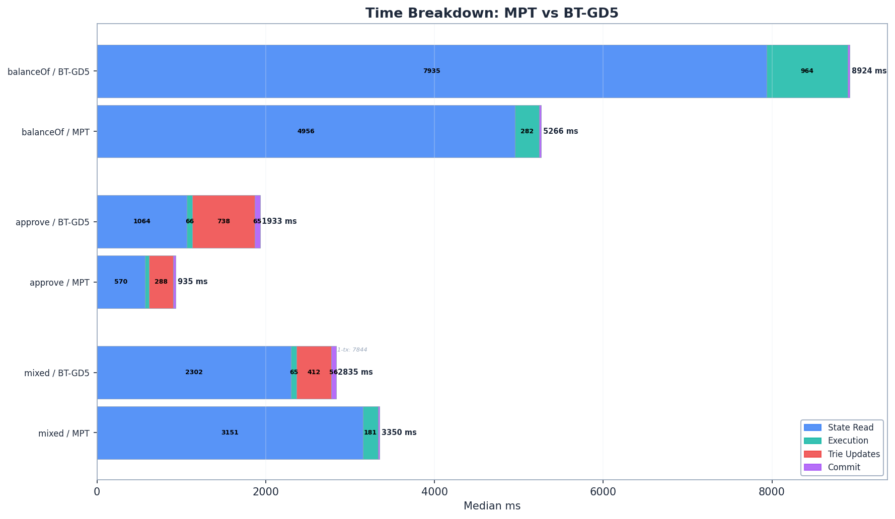
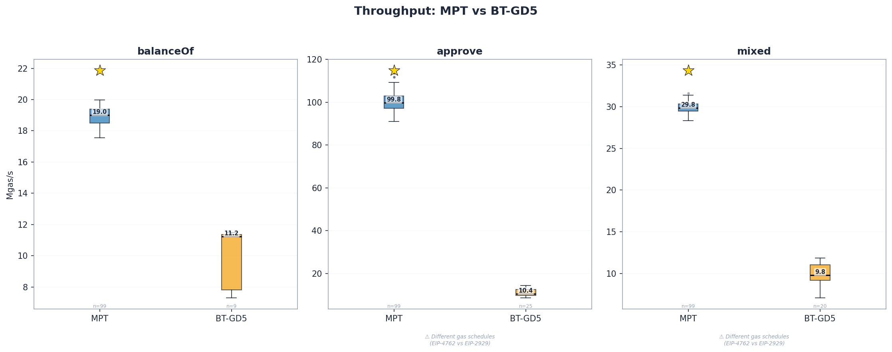
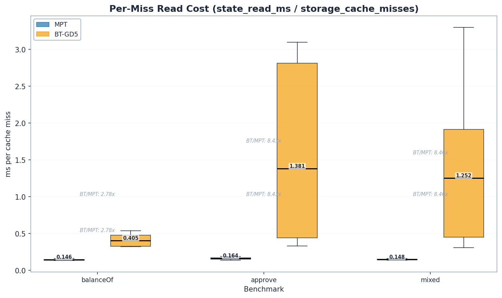
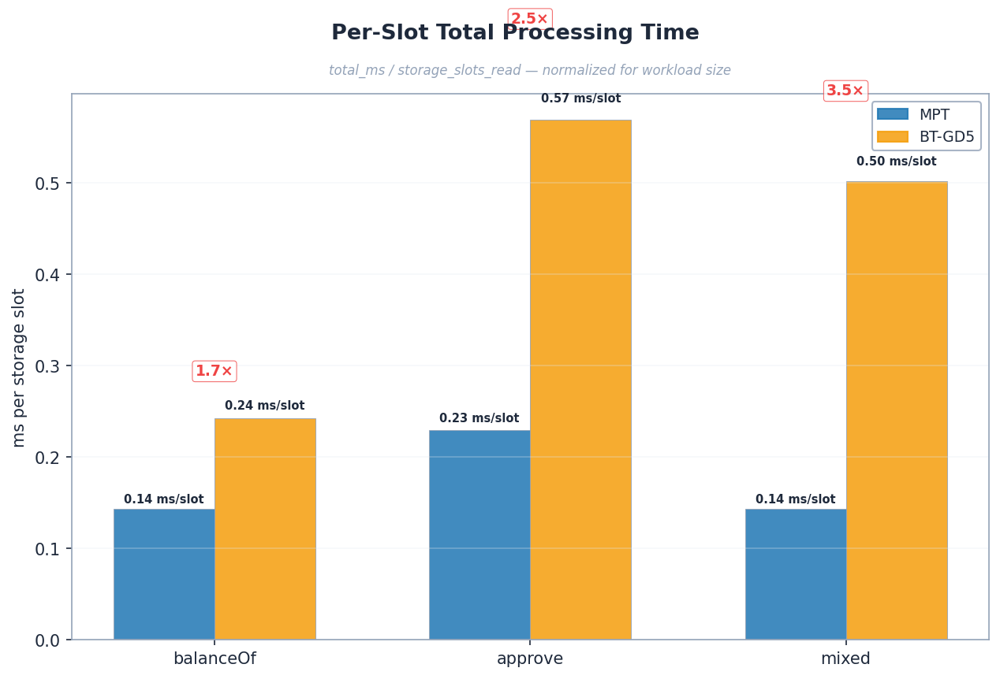
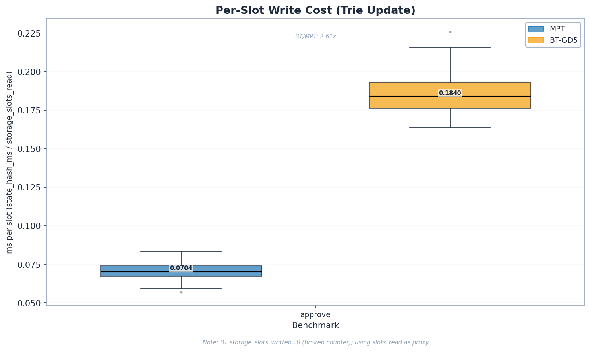
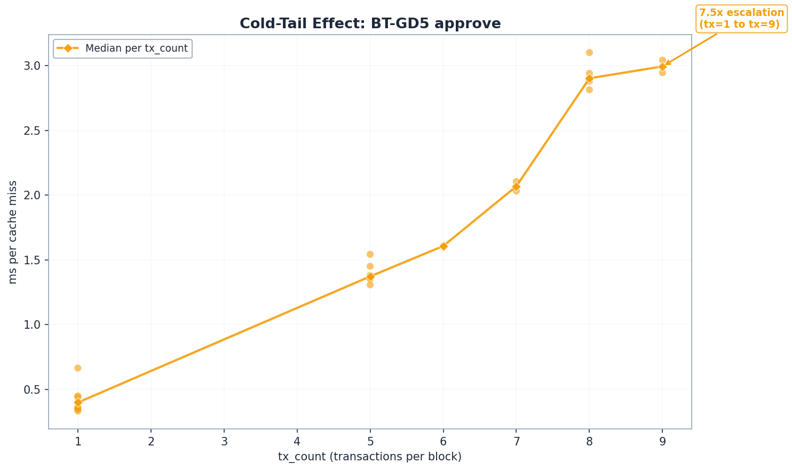

BT-GD5 vs production MPT on identical bare-metal hardware. The binary trie is ~2x slower per storage operation — 1.7x on reads, 2.5x on writes — but the gap is narrowing.
The binary trie is on the Ethereum protocol strawman as a future state tree replacement (EIP-7864). Part 1 established GD-5 and GD-6 as the optimal group-depth settings for the binary trie. With those parameters decided, the natural next question is: how does the optimized binary trie compare to production MPT?
BT-GD5 (bintrie fork, commit 991300c4) vs MPT (upstream geth master, commit 5d0e18f7) on identical bare-metal hardware. Three ERC20 workloads: erc20_balanceof (reads), erc20_approve (writes), mixed_sload_sstore (50-50). Cold-cache protocol with OS page cache drops and --cache 0 between every run. MPT: 100 runs per benchmark. BT-GD5: 10 runs per benchmark.
Section 2 covers what changed since Part 1. Section 3 details methodology. Sections 4–5 present the results in a narrative arc: reads first (the clean comparison), then writes (where gas schedule differences require careful normalization). Section 6 explores the deeper architectural patterns — cold tail effects, why hash time is really trie-walking time, and what drives the gap from first principles. Section 7 surveys the optimization path forward, and Section 8 gives the verdict. Short on time? Start with Section 4's hero finding — it frames the entire discussion.
Position: The binary trie is not ready for production today, but the gap is narrowing.
Part 1 ran on a QEMU VM (8 vCPUs, 30 GB RAM). Part 2 runs on bare metal — an AMD EPYC 9454P 48-Core (96 threads) with 126 GB RAM and 3.5 TB SSD RAID. This eliminates virtualization overhead and provides more realistic I/O characteristics. Absolute numbers between Part 1 and Part 2 are not comparable due to the hardware change.
Part 1 compared binary trie configurations against each other (GD-1 through GD-8). Part 2 adds the first cross-architecture comparison: BT-GD5 vs production MPT. This is the question that matters for Ethereum's roadmap.
A focused sprint produced 4 merged PRs targeting binary trie performance:
| PR | Description | Target | Merged | In benchmark binary? |
|---|---|---|---|---|
| #34032 | Parallelize InternalNode.Hash at shallow depths | state_hash_ms |
2026-03-18 | Yes |
| #34025 | Avoid Bytes() allocation in flatReader | state_read_ms, GC |
2026-03-17 | Yes |
| #34021 | Skip redundant trie Commit for Verkle | commit_ms |
2026-03-17 | Yes |
| #34022 | Bypass per-account updateTrie for binary trie | commit overhead | 2026-03-20 | Yes (local branch) |
The benchmark binary (built 2026-03-19, commit 991300c4) includes all 4 optimizations. PR #34022 was included via a local stacked branch before its upstream merge date. This PR introduced a counter bug discussed in Section 3 Known Issues.
| Database | Size | Bloat | State entries |
|---|---|---|---|
| MPT | 1.6 TB | ~2.53 GB ERC20 | ~400M |
| BT-GD5 | 1.4 TB | ~2.76 GB ERC20 | ~400M |
Both databases were generated using state-actor (100K contracts, seed 25519) followed by spamoor erc20_bloater to deploy ERC20 storage. The ~200 GB size difference reflects the binary trie's more compact encoding at GD-5.
With the hardware and baseline established, we move to methodology — including a critical gas-schedule issue that shapes how we interpret every write benchmark.
| Parameter | Value |
|---|---|
| Machine | Bare metal — AMD EPYC 9454P 48-Core (96 threads), 126 GB RAM, 3.5 TB SSD (md RAID), Ubuntu 24.04 LTS |
| Databases | MPT: 1.6 TB, BT-GD5: 1.4 TB (~400M accounts + storage) |
| Configurations | mpt (upstream geth 5d0e18f7) vs bt-gd5 (bintrie fork 991300c4) |
| Protocol | Cold cache (OS page cache dropped + --cache 0 between runs) |
| Runs | MPT: 100 per benchmark, BT-GD5: 10 per benchmark |
| Gas target | 100M gas per block |
| Benchmarks | erc20_balanceof (reads), erc20_approve (writes), mixed_sload_sstore (mixed) |
Each run: kill geth, sync && echo 3 > /proc/sys/vm/drop_caches, restart geth with --cache 0 --dev.period 10 --dev.gaslimit 110000000, wait for RPC ready, execute benchmark, save log. This ensures every run starts from a cold state — no trie cache, no Pebble block cache, no OS page cache.
mgas_per_sec)IsVerkle()=true, which triggers EIP-4762 witness-based gas costs (core/vm/evm.go:152-154, core/vm/eips.go:450-458). SSTORE costs ~5,600 gas under EIP-4762 vs ~22,100 gas under EIP-2929. For balanceof (reads), gas is identical — 100M for both configs, 2,722 gas/slot. For approve (writes), MPT uses 22,897 gas/slot vs BT's 5,955 gas/slot (3.85x different). This means Mgas/s is not a valid cross-architecture metric for write benchmarks. Per-slot time is the primary comparison metric for approve and mixed.With the methodology and caveats in hand, we start with the cleanest comparison in the study: pure reads.
The erc20_balanceof benchmark calls balanceOf() on a minimal ERC20 contract for ~36,741 random addresses per block. Each call triggers a cold SLOAD — a storage read that must traverse the trie from root to leaf. The addresses are keccak-hashed, scattering uniformly across the trie's keyspace, so there is no locality benefit. This is a pure read workload: maximum storage lookups per gas, minimum overhead from writes or contract logic.
It is also the cleanest comparison in the study: both configs process identical 100M-gas blocks with the same gas schedule (EIP-4762 and EIP-2929 charge the same for reads), the same ~36,741 slot lookups, and a single transaction per block. No normalization needed — Mgas/s is apples-to-apples.
Both configs process identical workloads: 1 transaction per block, ~36,741 storage slot reads, 100M gas. The component breakdown:
| Component | MPT | BT | Ratio |
|---|---|---|---|
state_read_ms |
4,956 ms | 7,935 ms | 1.6x |
execution_ms |
~280 ms | ~941 ms | — |
state_hash_ms |
0.07 ms | 0.18 ms | — |
commit_ms |
27.8 ms | 24.5 ms | 0.9x |
total_ms |
5,264 ms | 8,901 ms | 1.7x |
State reads dominate for both configs — 94% of MPT's time, 89% of BT's. The 1.6x gap in state_read_ms is the core penalty: binary trie paths are deeper (~52 group nodes at GD-5, each bundling a 5-level subtree, vs MPT's ~5–6 hex branch nodes), and each group node requires a separate database lookup through Pebble's LSM tree on cold reads.
Per-slot read cost: 0.135 vs 0.216 ms/slot = 1.6x.
Per-cache-miss read cost: 0.146 vs 0.405 ms/miss = 2.8x (95% CI: [2.22, 3.36]). Each cache miss is one cold trie traversal from disk. This normalizes away cache rate differences entirely and represents the raw cost of traversing a binary trie path (~52 GD-5 nodes through Pebble) vs an MPT hex path (~5–6 branch nodes).
Cache caveat: BT's 35% cache hit rate vs MPT's 7% is a prefetcher artifact, not a bintrie caching advantage. Both use the identical stateReaderWithCache code path. BT's slower per-slot resolution gives the prefetcher goroutine more time to race ahead and warm the shared map.


The balanceof panel is valid for direct comparison. The approve and mixed panels show Mgas/s, which is confounded by different gas schedules for writes — see Section 5.

For reads, the gap is real and bounded at 1.7–2.8x depending on the metric. The binary trie's deeper path (~52 vs ~5 nodes) makes each traversal more expensive, but by less than one might expect from a 10x depth difference. Writes are a different story — and a more complex one.
The erc20_approve benchmark calls approve() on the same minimal ERC20 contract for ~4,094 random spender addresses per block. Each call triggers a cold SLOAD (read current allowance) followed by a cold SSTORE (write new allowance). Unlike balanceof, this workload exercises both the read and write paths of the trie.
The approve benchmark reveals an important methodological caveat: the bintrie fork uses EIP-4762 witness-based gas rules (IsVerkle()=true), where SSTORE costs ~5,600 gas vs MPT's ~22,100 gas under EIP-2929. For the same 4,094 storage operations, MPT consumes ~93.7M gas while BT consumes ~24.4M — a 3.85x difference. Dividing less gas by wall-clock time produces a lower Mgas/s, so raw Mgas/s is not a valid cross-architecture metric for writes.
Per-slot time is the primary comparison:
| Benchmark | MPT ms/slot | BT ms/slot | Ratio | 95% CI |
|---|---|---|---|---|
| approve (total) | 0.229 | 0.569 | 2.5x | [2.24, 2.64] |
| approve (hash) | 0.070 | 0.184 | 2.6x | [2.51, 2.73] |
| approve (read) | 0.139 | 0.260 | 1.9x | — |
The per-slot total time ratio (2.5x for approve) is the fairest write comparison. Both configs process 4,094 storage slots per single-tx block. The 2.6x hash cost reflects BT-GD5's internal subtree rehashing — 25 - 1 = 31 hash operations per node vs MPT's more compact structure. The 1.9x read cost is slightly higher than balanceof's 1.6x because balanceof reads ~36,741 slots vs approve's ~4,094. With 9x more reads, balanceof warms the upper trie node cache more thoroughly — shared path prefixes are resolved once and reused. Approve's smaller workload leaves more of the upper trie cold per read.


For reference, the raw Mgas/s numbers are 99.8 vs 10.4 (9.6x), but this ratio conflates the architectural performance gap with the gas schedule difference. Mgas/s remains useful for within-MPT or within-BT comparisons, but not for cross-architecture comparison on write workloads.
The real gap is ~1.7x on reads and ~2.5x on writes per storage slot. What drives this gap architecturally, and are there deeper patterns in the data?
This is the most interesting finding in the study.
In multi-tx blocks, the prefetcher caches easy-to-access slots first. As tx_count increases, the remaining cache misses correspond to progressively colder, deeper trie paths. The mechanism: the prefetcher goroutine drains hot upper-path shared nodes first. Later misses diverge at shallower depths, requiring fresh disk seeks at every level of the trie path.
| tx_count | n_blocks | Median ms/miss | vs tx=1 |
|---|---|---|---|
| 1 | 9 | 0.40 | baseline |
| 5 | 6 | 1.37 | 3.4x |
| 6 | 1 | 1.61 | 4.0x |
| 7 | 2 | 2.07 | 5.2x |
| 8 | 5 | 2.90 | 7.3x |
| 9 | 2 | 2.99 | 7.5x |
This is not a measurement artifact. It is a fundamental property of the binary trie's access pattern: frequently accessed slots cluster in warmer trie regions, and as the prefetcher drains those first, the remaining misses hit increasingly cold paths. The cold tail effect explains why approve and mixed per-miss costs (8.4–8.5x) in the all-blocks numbers are much higher than balanceof (2.8x) — the multi-tx blocks leave only the hardest misses after caching.

The performance gap is rooted in fundamental structural differences between the two trie designs.
Why MPT needs only 5–6 nodes per lookup. MPT uses separate per-account storage tries with 16-way hex branching. An account lookup traverses ~5 hex branch nodes in the account trie, then a separate, smaller storage trie for the target slot. The per-account trie is shallow because it only indexes that account's storage — not the entire state.
Why BT needs ~52 nodes per lookup. The binary trie unifies all accounts and storage into a single 256-bit keyspace. Every key is SHA-256 hashed, and at GD-5 each node encapsulates 5 binary levels (25 = 32 child pointers). A full traversal from root to leaf crosses ~52 on-disk nodes — each requiring a separate Pebble lookup.
Why hash cost is 2.6x from first principles. Each GD-5 group node contains a 5-level internal binary subtree. When a key is modified, the dirty path through the subtree requires 5 hash operations (one per level). With ~52 group nodes on the path, a single-key update triggers ~260 SHA-256 hashes total. If multiple keys dirty different paths within the same group, the cost rises toward the worst case of 25 - 1 = 31 hashes per group. MPT, by contrast, updates ~2–3 branch modifications across ~5 path nodes, yielding ~10–15 updates. The measured 2.6x gap is much smaller than the raw hash count ratio because 95–98% of "hash time" is actually node traversal, dirty-node collection, and I/O — not the cryptographic operation itself (see 6c below).
| Property | Binary Trie (GD-5) | MPT |
|---|---|---|
| Hash function | SHA-256 | Keccak-256 |
| Structure | Unified trie (all accounts + storage) | Separate per-account storage tries |
| Path depth | ~52 nodes per lookup | ~5–6 branch nodes per lookup |
| Node size | ~1 KB (32 child pointers x 32 bytes) | Variable (branch: up to 17 slots) |
| Key distribution | SHA-256 hashed into 256-bit space | Keccak-256 hashed per trie |
| Internal hashes per write | 5 per node x ~52 nodes = ~260 (single key; up to 31 per node worst case) | ~2–3 per node x ~5 nodes = ~10–15 |
The state_hash_ms metric is misleadingly named. It measures the full state root recomputation: traversing the trie to locate dirty nodes, reading sibling nodes from disk where needed for hash computation, and computing the cryptographic hashes. It is dominated by I/O and traversal, not the hash function itself.
95–98% of "hashing" time is node traversal, dirty-node collection, and serialization — not the actual SHA-256 or Keccak crypto. The implication is clear: optimizing the hash function (SHA-256 vs Keccak) would not meaningfully change the performance gap. Optimizing trie traversal and node update paths would.
From the architectural patterns, we turn to what can be done about them.
Snapshot layer / pathdb fast reads. In geth's current pathdb scheme, flat state reads already use a snapshot-like path — a direct hash lookup through diff layers to disk, essentially a key-value fetch. Geth developers expect pathdb reads to approach snapshot-level speed. If this holds for the binary trie, the 1.7x read gap could narrow significantly. The remaining gap would be the 2.6x write cost — dominated by trie traversal and sibling resolution, which no snapshot layer can avoid.
Pebble block size tuning. GD-5 nodes serialize to ~1 KB. Pebble's default 4 KB block size means multiple nodes fit per block, but NVMe page-read benchmarks show random 16 KB reads achieve 2.3x throughput of 4 KB. Larger Pebble blocks may help if they align better with the access pattern.
Parallel execution. NVMe at QD=8 improves random 4 KB throughput 8.7x over QD=1 (673 vs 77 MB/s). Parallel EVM execution could increase effective I/O queue depth, compressing read latency differences between architectures.
--cache.noprefetch benchmarks. Disabling the transaction-level prefetcher would remove the parallel pre-execution that warms the shared state cache, showing raw trie performance without that optimization. However, the trie-node prefetcher (which pre-populates trie nodes during transaction processing) would remain active regardless. This gives a partially-controlled view — cleaner than the current data, but still not pure cold-trie performance. It would also sacrifice a real production optimization, so results would not reflect deployed behavior.
The ~2x read gap is the critical concern because Ethereum is read-heavy. However, the optimization trajectory is encouraging — 4 PRs merged in a single week — and the largest potential improvement (snapshot layer) hasn't been explored yet.
How close is BT to fitting within Ethereum's 12-second slot window?
| Benchmark | BT for 100M gas | % of 12s slot |
|---|---|---|
| balanceof | ~8.9 s | 74% |
| approve | ~7.6 s | 64% |
| mixed | ~10.9 s | 91% |
BT mixed at 91% of a 12-second slot leaves almost no margin for networking, attestation, and other non-execution overhead. On typical validator hardware (which is more modest than our 48-core EPYC), this is likely unviable without further optimization. MPT, by contrast, processes 100M gas in 3.4–5.3 s (28–44% of a slot). While this appears to leave headroom, the actual budget for block execution in practice is tighter — re-execution, networking, and attestation overhead consume much of the remaining time. Ethereum has been operating near the edge of its execution budget, though without incident so far.
| Factor | Favors BT | Favors MPT | Weight |
|---|---|---|---|
| Stateless client proofs | Moderate (smaller witnesses, helpful for ZK-EVM proof generation, though ZK-EVMs already operate with MPT today) | — | High |
| Current read throughput | — | Strong (1.7–2.8x faster) | High |
| Current write throughput | — | Strong (2.5x per slot) | High |
| Optimization ceiling | Moderate (early stage, fast velocity) | Low (mature codebase) | Medium |
| Code complexity | Simpler (unified trie) | Complex (per-account tries) | Low |
Pattern 1: The read gap is real but bounded (1.7–2.8x). The per-cache-miss comparison (2.8x) is the upper bound; raw throughput (1.7x) is the lower bound. Both are trustworthy — they use identical gas, identical slot counts, identical tx_count. The binary trie's ~52-node path vs MPT's ~5-node path makes each traversal more expensive, but by far less than the 10x depth ratio would suggest.
Pattern 2: BT is read-bound. State reads consume ~89% of BT's block processing time for read-heavy workloads, and ~94% for MPT. The read path is the dominant optimization target — reducing per-node read latency compounds across ~52 nodes per lookup.
Pattern 3: Hash cost is 2.6x per slot and trie-walk dominated. The clean write penalty from GD-5's 25 - 1 = 31 internal hash operations per node. But 95–98% of the measured hash time is trie traversal and serialization, not cryptographic hashing. Changing the hash function would not materially help.
Snapshot layer benchmark. Does a flat snapshot layer close the read gap? This is the single most important experiment for the binary trie's production viability.
--cache.noprefetch runs. A benchmark with prefetching disabled would eliminate the cache asymmetry confound and give the purest trie-vs-trie comparison.
Mainnet read/write ratio analysis. Ethereum blocks are read-heavy, but the exact ratio has not been systematically measured. The real-world impact of the 1.7x read gap vs the 2.5x write gap depends on this split.
Database schema redesign. Could a different on-disk layout reduce the binary trie's traversal penalty? The current implementation stores each GD-5 node as a separate Pebble key — alternative layouts (e.g., co-locating path siblings) might reduce seek overhead.
Is Pebble the right database engine for the unified binary trie? The binary trie's access pattern — ~52 sequential key lookups per storage read, each resolving a different group node — differs fundamentally from MPT's per-account storage tries. A database engine optimized for prefix-sequential reads or with better support for the binary trie's access pattern might reduce the read gap.